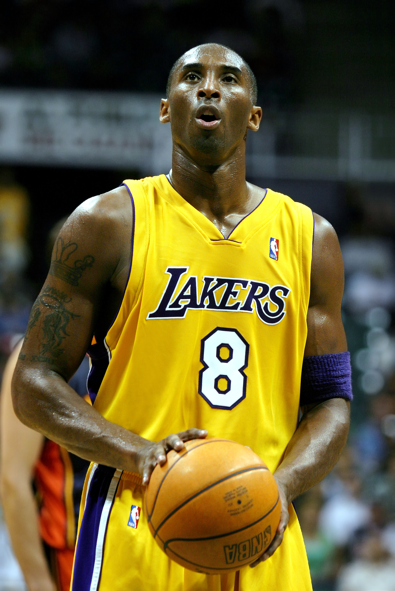
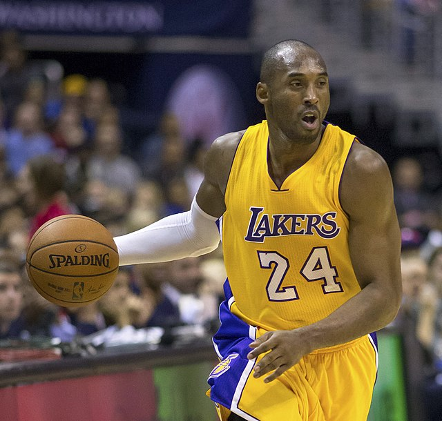
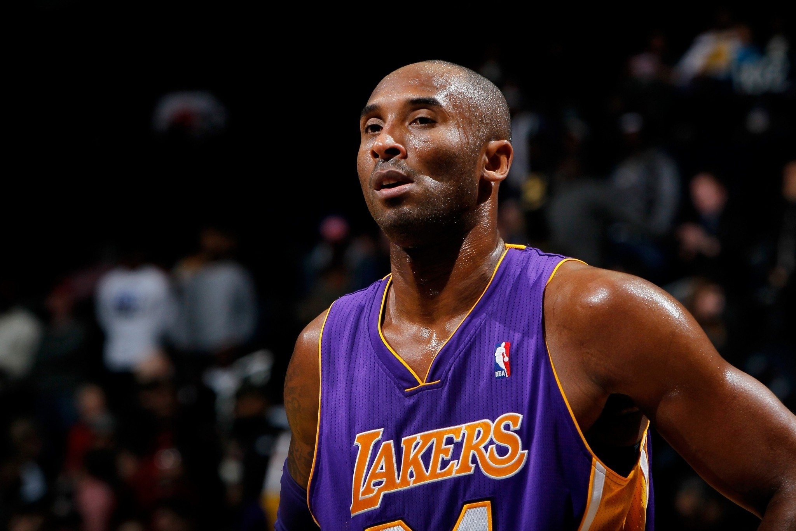
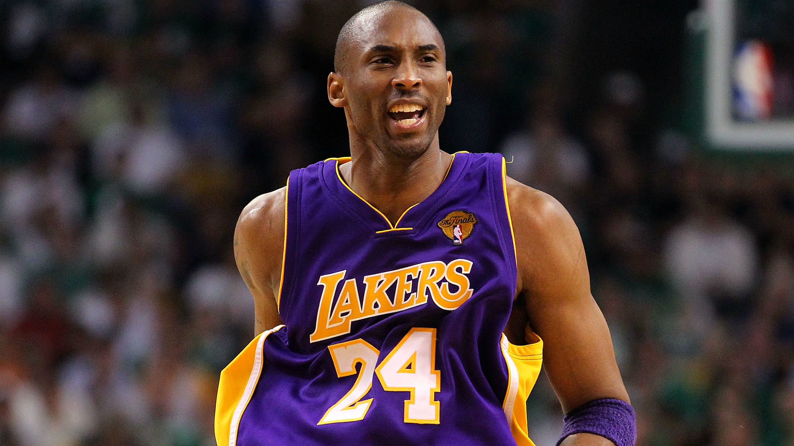
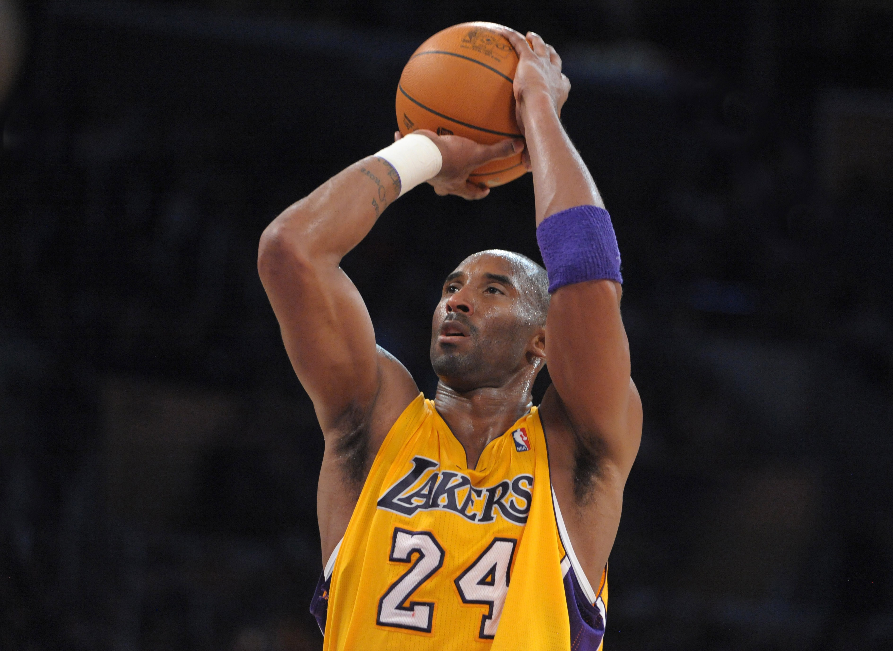

Una leggenda dell’NBA. 5 volte campione. Per sempre nei cuori.
Kobe Bryant è stato uno dei più grandi giocatori della storia del basket. Nato il 23 agosto 1978, ha giocato per 20 stagioni con i Los Angeles Lakers, vincendo 5 titoli NBA. Celebre per la sua “Mamba Mentality”, Kobe ha lasciato un’impronta indelebile nello sport e nella cultura pop.



